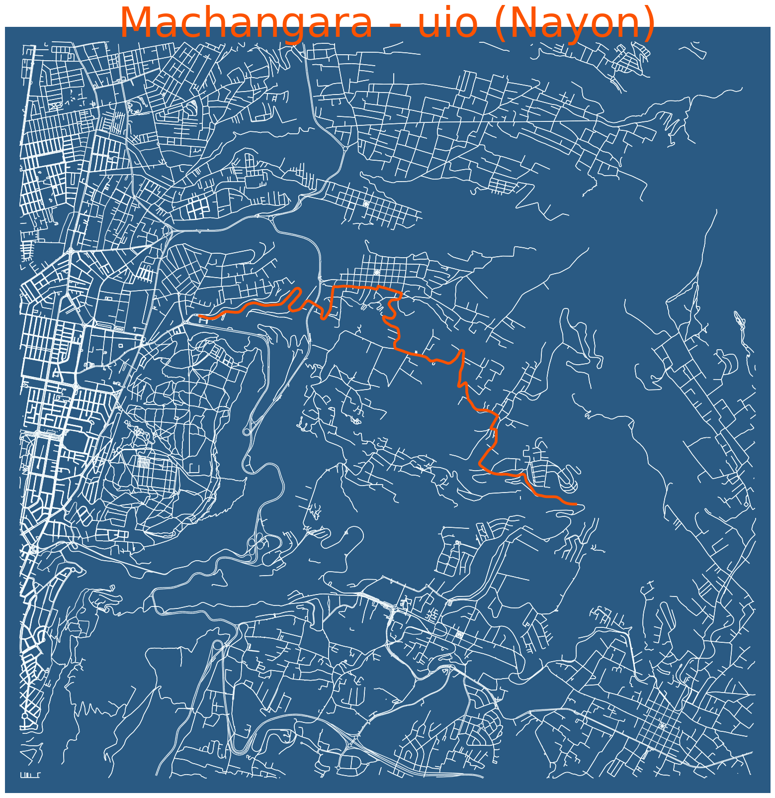
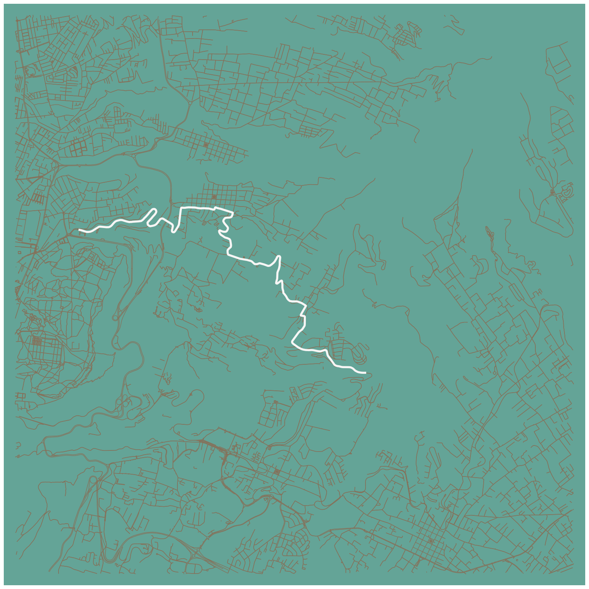

import osmnx as ox
import pandas as pd
import gpxpy
import gpxpy.gpx
import matplotlib.pyplot as plt
import polyline
import ast
import requests
from tqdm import tqdm
import time
import requests
import jsonThis project focuses on visualizing GPX segments from Strava, a popular platform for tracking fitness activities. By extracting and processing the GPX data, the project generates detailed maps that display specific segments of routes used in cycling, running, or other activities. The visualization highlights important metrics like distance, elevation, and speed, offering an interactive way to analyze and explore the recorded paths.
Read Strava segmenst Dataset
df_segmenst = pd.read_csv("../data/segmetos_by_id.csv" )
df_segmenst.head()| id | name | activity_type | distance | average_grade | maximum_grade | elevation_high | elevation_low | start_latlng | end_latlng | ... | private | athlete_pr_effort | created_at | updated_at | total_elevation_gain | map | effort_count | athlete_count | hazardous | star_count | |
|---|---|---|---|---|---|---|---|---|---|---|---|---|---|---|---|---|---|---|---|---|---|
| 0 | 891158 | Elias Sinalin Climb | Ride | 2326.24 | 7.1 | 14.4 | 2448.8 | 2283.2 | [-0.1734213251620531, -78.42762278392911] | [-0.1637657918035984, -78.43702451325953] | ... | False | NaN | 2012-01-03 02:21:01+00:00 | 2021-05-17 08:03:48+00:00 | 165.600 | {'id': 's891158', 'polyline': '|z`@t{t}Mk@^m@T... | 36400 | 1995 | False | 2 |
| 1 | 891159 | Elias Sinalin Climb | Ride | 2254.94 | 7.4 | 16.0 | 2442.8 | 2275.4 | [-0.17346843145787716, -78.42755891382694] | [-0.16448546200990677, -78.4368119481951] | ... | False | NaN | 2012-01-03 02:21:03+00:00 | 2021-05-17 08:03:48+00:00 | 167.400 | {'id': 's891159', 'polyline': 'd{`@f{t}MOPe@Zk... | 36498 | 2195 | False | 3 |
| 2 | 907410 | Francisco De Orellana Climb | Ride | 2046.32 | 4.0 | 8.0 | 2332.5 | 2249.7 | [-0.211095, -78.424131] | [-0.201859, -78.431089] | ... | False | NaN | 2012-01-09 13:56:41+00:00 | 2021-05-15 02:11:44+00:00 | 82.777 | {'id': 's907410', 'polyline': 'jfh@zet}MyBt@mD... | 1129 | 326 | False | 2 |
| 3 | 907414 | Carlos Dousdebes A Climb | Ride | 1542.17 | 9.1 | 15.3 | 2375.7 | 2235.0 | [-0.185288, -78.415436] | [-0.180186, -78.426947] | ... | False | NaN | 2012-01-09 13:56:47+00:00 | 2021-05-17 08:03:48+00:00 | 140.742 | {'id': 's907414', 'polyline': '`ec@nor}MEbBGj@... | 37218 | 2685 | False | 8 |
| 4 | 907417 | La Sofia Climb | Ride | 1948.30 | 4.5 | 7.6 | 3158.1 | 3070.8 | [-0.257156, -78.502686] | [-0.272689, -78.509288] | ... | False | NaN | 2012-01-09 13:56:52+00:00 | 2021-05-18 08:02:40+00:00 | 87.286 | {'id': 's907417', 'polyline': 'ffq@xpc~MnAWbAI... | 6598 | 1564 | False | 7 |
5 rows × 24 columns
df_segmenst.columnsIndex(['id', 'name', 'activity_type', 'distance', 'average_grade',
'maximum_grade', 'elevation_high', 'elevation_low', 'start_latlng',
'end_latlng', 'climb_category', 'city', 'state', 'country', 'private',
'athlete_pr_effort', 'created_at', 'updated_at', 'total_elevation_gain',
'map', 'effort_count', 'athlete_count', 'hazardous', 'star_count'],
dtype='object')#segment id
segment_id = 4692061#finde segment
segment = df_segmenst[df_segmenst.id == segment_id].iloc[0]
#segment name
name_plot = segment['name']
segment_name = segment['name'].replace(" ", "_")
#str to dict
segment_map = ast.literal_eval(segment['map'])
# decode polyline map segment
segment_decode = polyline.decode(segment_map['polyline'])
# get latitude and longitude
segment_lat, segment_long = zip(*segment_decode)
#segment start
segment_start = ast.literal_eval(segment['start_latlng'])
#segment end
segment_end = ast.literal_eval(segment['end_latlng']) Center point for Graph in ox
# center point to extract graph latitude , longitude
center_point = ((segment_end[0]+segment_start[0])/2, ((segment_end[1]+segment_start[1])/2))Link osmnx graph_from_point fuction
https://osmnx.readthedocs.io/en/stable/osmnx.html?highlight=graph_from_point#osmnx.graph.graph_from_point
G = ox.graph_from_point(center_point, dist=5000, retain_all=True, simplify = False, network_type='all')
#bike allDefine colors
def color_Palette(plot=True , model = "default"):
"""
Generates a color palette using the ColorMind API.
Parameters:
plot (bool): Whether to plot the colors as a bar chart. Default is True.
model (str): The name of the color palette model to use. If not found in the
list of available models, the default model will be used.
Default is "default".
Returns:
list: A list of colors represented as RGB
Available Models:
- ui
- default
- flame_photography
- christmas_season
- ocean_photography
- castlevania
"""
models = ['ui', 'default', 'flame_photography', 'christmas_season',
'ocean_photography', 'castlevania']
model = model if model in models else "default"
url = 'http://colormind.io/api/'
data = {
"model": model
}
response = requests.post(url, data=json.dumps(data))
colors = [[r/255, g/255, b/255] for r, g, b in response.json()["result"]]
if plot:
# Create a bar chart with color swatches
fig, ax = plt.subplots()
for i, color in enumerate(colors):
ax.bar(i, 1, color=color)
# Set the x-axis ticks and labels
ax.set_xticks(range(len(colors)))
ax.set_xticklabels(['Color {}'.format(i+1) for i in range(len(colors))])
# Remove the y-axis ticks and labels
ax.set_yticks([])
ax.set_ylabel('')
# Set the title
ax.set_title('Color Palette')
# Adjust the layout and display the plot
plt.tight_layout()
plt.show()
return colors# color = color_Palette()nc = ox.plot.get_node_colors_by_attr(G, attr="y", cmap="plasma")# otherwise, when num_bins is None (default), linearly map one color to each node/edge by value
ec = ox.plot.get_edge_colors_by_attr(G, attr="length")# get n evenly-spaced colors from some matplotlib colormap
color =ox.plot.get_colors(n=5, cmap="inferno", return_hex=True)
color['#000004', '#57106e', '#bc3754', '#f98e09', '#fcffa4']ss = ox.plot.get_node_colors_by_attr(G , cmap="Accent" ,attr="x")nc = ox.plot.get_edge_colors_by_attr(G, attr="length", cmap="inferno")ec = ox.plot.get_edge_colors_by_attr(G, attr="length", num_bins=6 , cmap="ocean" ,
)
# otherwise, when num_bins is None (default), linearly map one color to each node/edge by value
# ec = ox.plot.get_edge_colors_by_attr(G, attr="length")Edit lines and colors
u = []
v = []
key = []
data = []
for uu, vv, kkey, ddata in G.edges(keys=True, data=True):
u.append(uu)
v.append(vv)
key.append(kkey)
data.append(ddata)
# Lists to store colors and widths
roadColors = []
roadWidths = []
for item in data:
if "length" in item.keys():
if item["length"] <= 100:
linewidth = 0.10
color = "#a6a6a6"
elif item["length"] > 100 and item["length"] <= 200:
linewidth = 0.15
color = "#676767"
elif item["length"] > 200 and item["length"] <= 400:
linewidth = 0.25
color = "#454545"
elif item["length"] > 400 and item["length"] <= 800:
color = "#bdbdbd"
linewidth = 0.35
else:
color = "#d5d5d5"
linewidth = 0.45
if "primary" in item["highway"]:
linewidth = 0.5
color = "#ffff"
else:
color = "#a6a6a6"
linewidth = 0.10
roadColors.append(color)
roadWidths.append(linewidth)#(27, 40),
fig, ax = ox.plot_graph(G, node_size=0,
figsize = (20, 20),
dpi = 300,
bgcolor = "#2A5A83",
save = False,
edge_color = '#F8FEFF',
edge_alpha = 1 ,
show = False,
)
## Plot activity in graph segment_lat, segment_long
ax.set_title(name_plot, fontsize=60 , y=1.0, pad=-14 , color = "#FC5200")
plt.plot( segment_long , segment_lat ,
color = "#FC5200" ,
linewidth = 4.0
)
## Plot activity in graph
plt.show()
fig.tight_layout(pad=0)
## path name to save
path_save = "../images/" + segment_name + ".png"
fig.savefig( path_save, dpi=300, format="png", bbox_inches='tight',
facecolor=fig.get_facecolor(), transparent=False)
#(27, 40),
fig, ax = ox.plot_graph(G, node_size=0,
figsize = (20, 20),
dpi = 300,
save = False,
bgcolor = "#64A497",
edge_color = "#86715A",
edge_alpha = 1 ,
show = False)
## Plot activity in graph segment_lat, segment_long
plt.plot( segment_long , segment_lat ,
color = "#F7F6F5" ,
linewidth = 4.0)
## Plot activity in graph
plt.show()
fig.tight_layout(pad=0)
## path name to save
path_save = "../images/" + segment_name + ".png"
fig.savefig( path_save, dpi=300, format="png", bbox_inches='tight',
facecolor=fig.get_facecolor(), transparent=False)